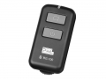

BG-100是一款高性能的蓝牙定时遥控器。它能远距离遥控相机拍摄，具备单张拍摄、连续拍摄、B门拍摄、2秒延时拍摄、定时计划拍摄，所有功能都可通过带有蓝牙的苹果设备轻松遥控拍摄（4.0以上的蓝牙版本） 。
好用，小巧，使用两节AA电池续航能力不错
多种拍摄方式，B门、连拍还有计划拍摄很实用
手机软件界面没有中文
4.5分
方便易用，功能很多，有苹果设备安装个app就能进行控制
app只有英文版。。
连接简单，功能多样
单张 连拍 B门 2s延时 计划拍摄都有 计划拍摄能设置多组
没有中文界面 app仅支持ios，没有app不能使用蓝牙遥控功能